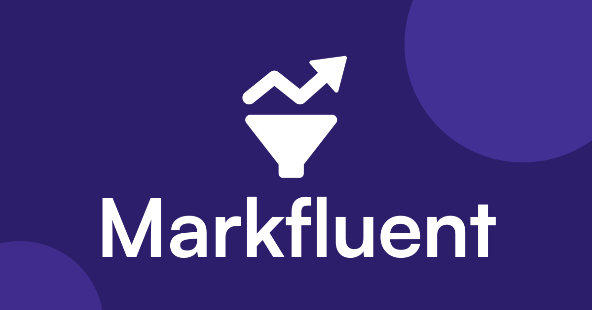

Markfluent brand assets
Purple flow mark, Satoshi wordmark. Everything here is vector and re-derivable — pick the asset you need and keep the ratios.
Colour
Primary purple
#7E5EFF
126, 94, 255
126, 94, 255
Ink
#2D1E6B
45, 30, 107
45, 30, 107
Canvas
#FAFAFF
250, 250, 255
250, 250, 255
Lavender
#EFECFF
239, 236, 255
239, 236, 255
Logo
Horizontal — primary
Horizontal — reverse
Stacked
Wordmark
Icon and favicon
Social card

Usage
ClearLeave at least the height of the funnel mark clear on every side. Nothing overlaps the lockup.
MinimumHorizontal lockup 120 px wide, stacked 96 px wide, icon 16 px. Below that use the favicon tile.
ColourPurple mark with ink wordmark on light surfaces; white wordmark with purple mark on ink. Never recolour the mark with a fourth colour.
Don'tNo stretching, outlines, shadows, gradients, rotation, or re-typing the wordmark in another font.
Files
| Path | Use |
|---|---|
svg/markfluent-logo-horizontal.svg | Header, footer, documents — default lockup |
svg/markfluent-logo-horizontal-reverse.svg | Same, on ink or photographic dark ground |
svg/markfluent-logo-stacked.svg | Square-ish spaces, print covers, merch |
svg/markfluent-wordmark.svg | Wordmark alone (outlined Satoshi 700) |
svg/markfluent-icon.svg | Mark alone, transparent background |
svg/markfluent-favicon.svg | Favicon / app icon on lavender tile |
png/ | Raster exports: icons 1024/512/192, apple touch, favicon 32/16 + .ico, social card, lockups |
tokens.json, brand.css | Colour, type and logo tokens for the site |